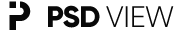

Sobre
⛶
+
−
↻
Selecione um arquivo para pré-visualizar
Roda do mouse / ← →: Navegar • Ctrl + Roda: Zoom • Arraste: Mover • R: Girar • Esc: Fechar
Todos
Imagens
PSD
Videos
↑
PSD VIEW — Versão 0.1.0
Explorer offline e rápido com fontes Gilroy e ícones oficiais.
Fechar